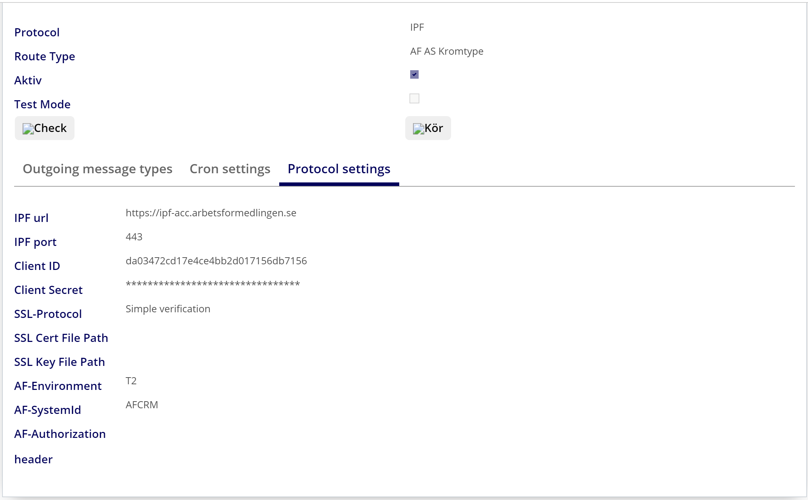
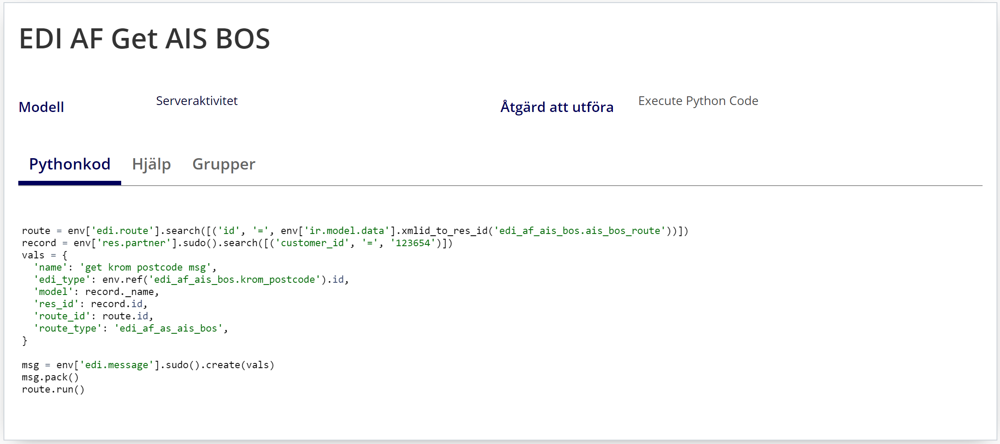

Description
This integration provides information that can form the basis for decisions on support. An endpoint return an enum value of the jobseeker's KROM status (Enum values:
Krom, KromEsf, EjKrom).
The API is an HTTP proxy against the underlying API of AIS. It is used to request information needed as a basis for decisions on support.
More detailed flow documentation is available at the IPF API Portal:
AIS BOS Regelverk,
endpoint /kromtyp-for-postnummer.
To configure this integration, you need to:
- Go to Tekniskt > EDI > EDI Route
- Edit or create AF Asok: Get AIS BOS route
- Go toProtocol settings menu and enter the following parameters
-
Url: https://ipf-acc.arbetsformedlingen.se
-
Client ID: is available in the IPF Portal
-
Client Secret: is available in the IPF Portal
-
SSL-Protocol: Simple verification

To test this integration, you need to:
- Go to Tekniskt > Åtgärder >Serveråtgärder
- Edit or create EDI AF Get AIS BOS
- The customer_id should be set to a jobseeker that has a valid postcode. i.e 721 34
- Return to Jobseeker tab and confirm the field Krom is set.
- See example below

Versions:
- V12.0.2.0.0
- V12.0.1.0.1
- V12.0.1.0.0